OREO Robotic Arm
2026I had some spare parts from a broken 3D printer, which I repurposed into this robotic arm. This is OREO, a 4-degree-of-freedom robotic arm driven by stepper motors and controlled with an ESP32. The joints each use different cycloidal gearboxes that I designed and 3D printed. You can see more about the gearbox design here.
The arm is controlled wirelessly over Wi-Fi and can be manipulated using a URDF 3D model. I'm currently using the robot to hold a phone camera to take moving video shots, and I hope to add more functionality soon. If you are interested in building any part of the robot yourself, the CAD and code are on GitHub.
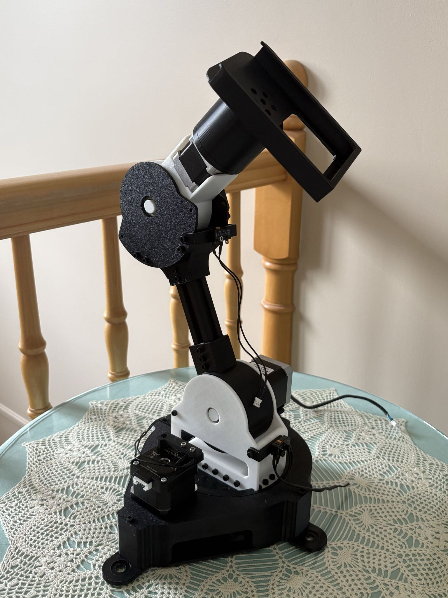
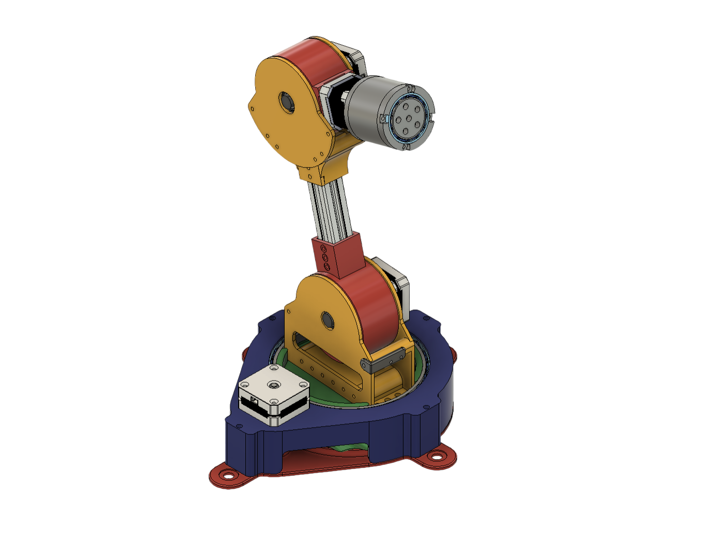
Features
- 4 degrees of freedom: base, shoulder, elbow, and wrist
- 3D-printed cycloidal gearboxes driving each joint
- Total height: 40 cm
- Weight: 2 kg
- Lifting capacity: 1.5 kg
- Controlled over Wi-Fi with an ESP32
Project goals
- High torque
- Smooth motion
- Clean design
- Low cost: under $250
The base
The base uses eccentric cycloidal gears, which are developed by extruding and twisting a cycloidal disc and lobe. This essentially creates two normal gears, with the input shaft having one tooth and the output gear having the same number of teeth as the cycloidal disc. For my robot, I used a 25:1 gear ratio, so the cycloidal disc has 25 bumps.
I chose eccentric cycloidal gears instead of the standard cycloidal gears used in the rest of the robot because the base needed to be very large, and this solution required less 3D printing and hardware. Since the base is so large, buying bearings would have been very expensive. Instead, I used this parametric model, made by the YouTube channel Positive Altitude, to 3D print custom bearings using ball bearings and silicone grease. They aren't as strong as metal bearings, but they move quite smoothly and come together very easily.
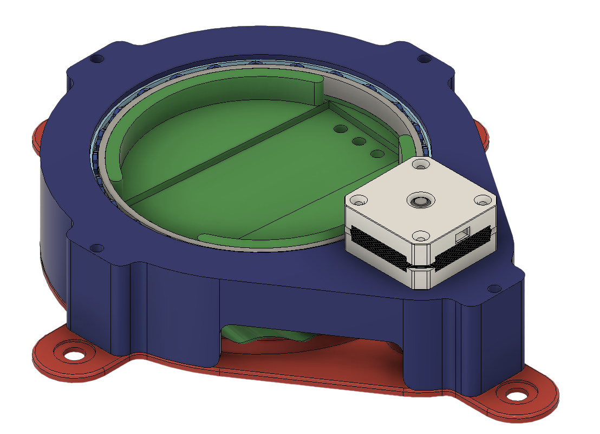
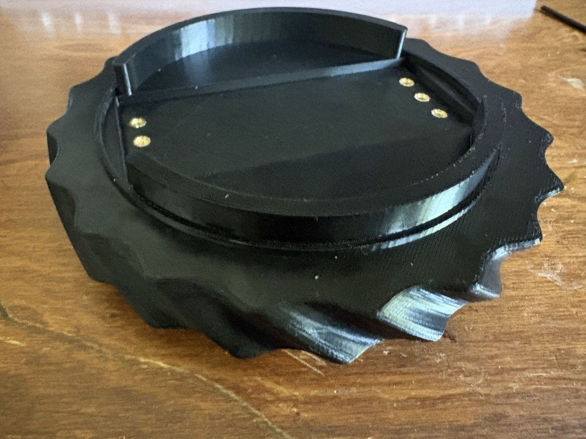
Shoulder and elbow
The shoulder and elbow use nearly identical 20:1 cycloidal gearboxes. More details are available on the Cycloidal Gearbox project page. I decided to make the gearbox housing rotate instead of driving an output shaft to make the arm more compact and symmetrical. The two joints are connected by a small aluminum T-slot extrusion bolted to the shoulder gearbox output.
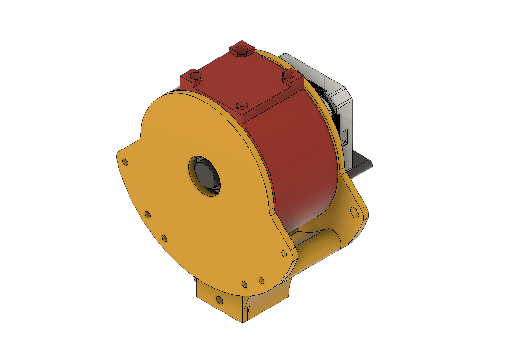
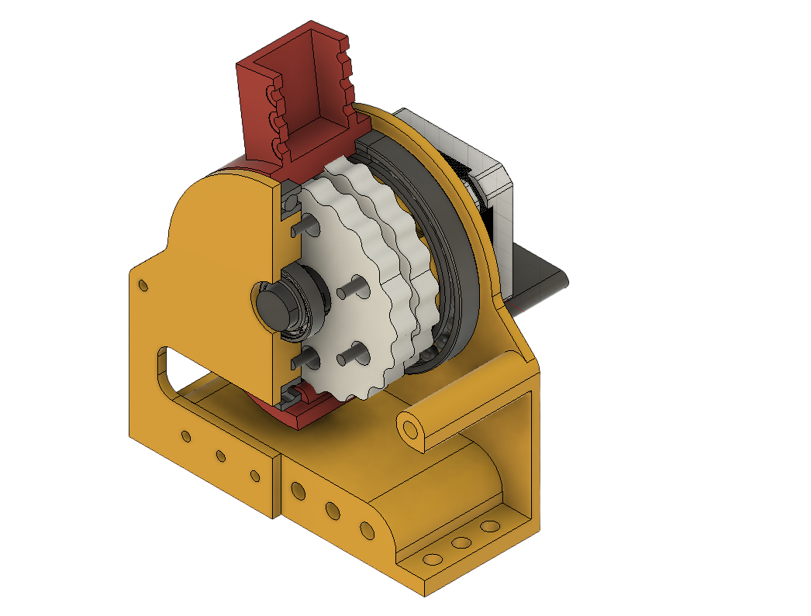
Wrist
The wrist is driven by a smaller NEMA 14 stepper motor, which is directly attached to the output of the elbow joint. To save on shipping time and money, I decided to use 3D-printed bearings, similar to the robot's base. In an effort to keep the wrist small and compact, I chose a smaller 11:1 gear reduction. Unlike the shoulder and elbow, the wrist drives an output shaft, which calls for slightly different internal components.
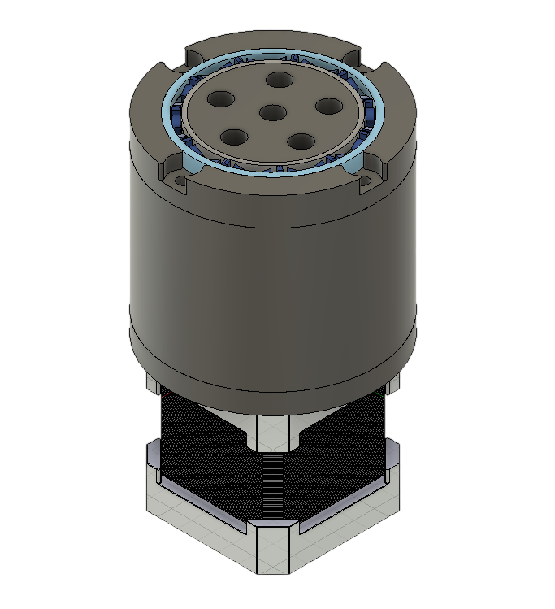
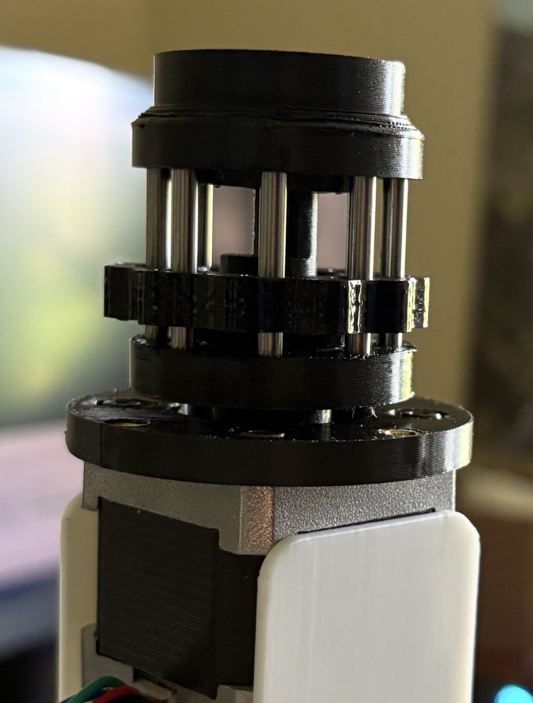
Electronics
- ESP32
- NEMA 17 and NEMA 14 stepper motors
- 4× DM542 stepper drivers
- 24 V power supply
- Jumper wire
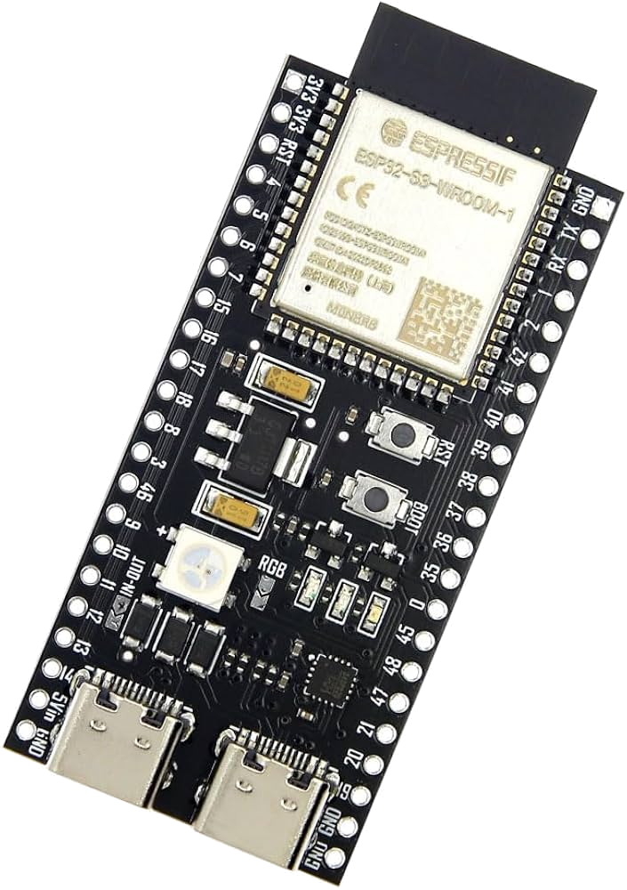
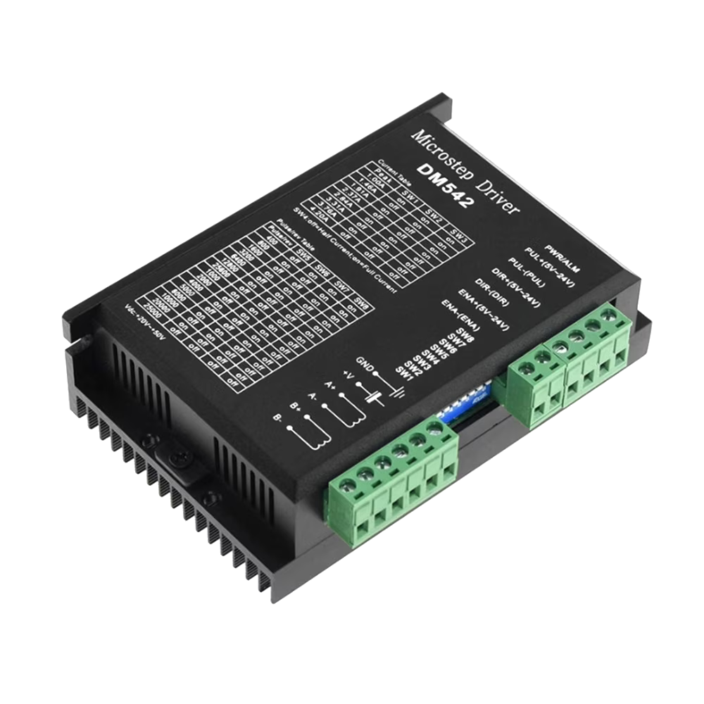
Control
Instead of encoders, I attached limit switches from a broken 3D printer to the extremes of the base, shoulder, and elbow. I turned each motor a certain number of steps and measured the angle created by the gearbox. After a few trials, I had an accurate ratio between steps and rotation.
To calibrate the arm, each motor is driven until a limit switch is hit, which is understood as the maximum position. The CAD model gives the maximum angle to limit rotation in the other direction. After calibration, each joint moves to its center position.
Using the joint angles and component lengths, inverse kinematics calculations can move the tip of the arm to specific locations in 3D space. I found clicking any point in space around the model difficult to control, so I added dots at different heights and distances around the arm that are easier to click.
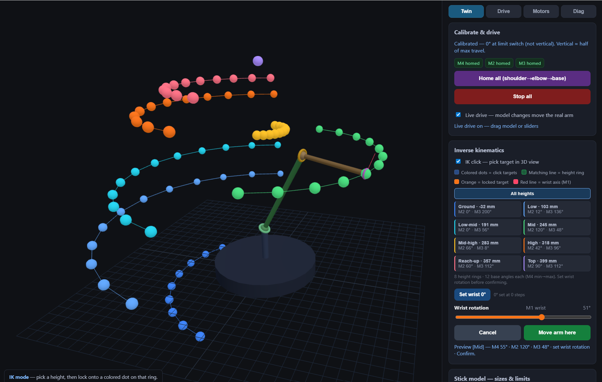
Things to improve
I was mostly focused on the design of the arm, so I think there are improvements to be made on the software side. I'd like to add a proper gripper and vision system and start training the robot to pick and place objects. I'd also like to improve the electronics, specifically the wiring, which is currently quite messy. Finally, I'd like to use actual encoders instead of approximating rotation with limit switches. Stay tuned for version 2?